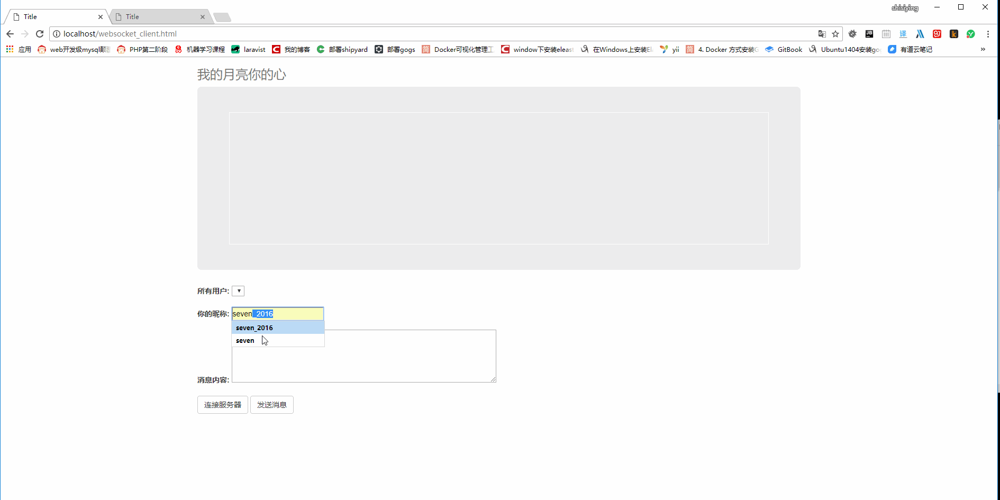

websocket+workerman实现聊天室
简易聊天室
在之前的文章当中websocket和php socket我们都学习了，基本原理也已经摸清楚了，接下来，我们可以使用php的一个socket框架写一个简单的聊天室。
功能主要有：
- 使用昵称登陆到聊天室中
- 同步聊天室的在线用户列表
- 点对点发送消息
效果图如下所示:

客户端代码如下所示:
<!DOCTYPE html>
<html lang="en">
<head>
<!-- 最新版本的 Bootstrap 核心 CSS 文件 -->
<link rel="stylesheet" href="https://cdn.bootcss.com/bootstrap/3.3.7/css/bootstrap.min.css"
integrity="sha384-BVYiiSIFeK1dGmJRAkycuHAHRg32OmUcww7on3RYdg4Va+PmSTsz/K68vbdEjh4u" crossorigin="anonymous">
<!-- 最新的 Bootstrap 核心 JavaScript 文件 -->
<script src="https://cdn.bootcss.com/bootstrap/3.3.7/js/bootstrap.min.js"
integrity="sha384-Tc5IQib027qvyjSMfHjOMaLkfuWVxZxUPnCJA7l2mCWNIpG9mGCD8wGNIcPD7Txa"
crossorigin="anonymous"></script>
<meta charset="UTF-8">
<title>Title</title>
</head>
<body>
<div class="container">
<div class="header clearfix">
<h3 class="text-muted">我的月亮你的心</h3>
</div>
<div class="jumbotron">
<div id="txtcontent" style="width:auto;height:250px;border: solid 1px white">
</div>
</div>
<div class="row marketing">
<div class="col-lg-8">
<div>
<div class="form-group">
<label>所有用户:</label>
<select id="listusers"></select>
</div>
<div class="form-group">
<label>你的昵称:</label>
<input type="text" id="username"/>
</div>
<div class="form-group">
<label for="exampleInputFile">消息内容:</label>
<textarea style="width:500px;height:100px" id="txtmsg"></textarea>
</div>
<button onclick="connectServer()" class="btn btn-default">连接服务器</button>
<button onclick="send()" class="btn btn-default">发送消息</button>
</div>
</div>
</div>
</div> <!-- /container -->
<script>
// 创建一个Socket实例
var socket = null;//初始是null
var isLogin = false;//是否登录到服务器上
function send() {
if (!isLogin) {
alert("请先服务器验证");
return;
}
var msg = document.getElementById("txtmsg").value;
var listusers = document.getElementById("listusers");
var toUserIP = listusers.options[listusers.selectedIndex].value;//发给用户的IP和端口 ，
var toUserName = listusers.options[listusers.selectedIndex].text;//发给用户的 昵称
socket.send("chat:<" + toUserIP + ">:" + msg);
//chat:<192.168.1.10:56002>:xxxxoo>
//在div 中显示我们的行为
var p = document.createElement("P");
p.innerHTML = "<span>发送消息给[" + toUserName + "]</span>" + msg;
document.getElementById("txtcontent").appendChild(p)
}
function connectServer() {
var userName = document.getElementById("username").value;
if (userName == "") {
alert("用户昵称必填 ");
return;
}
socket = new WebSocket('ws://192.168.164.134:9091/');
// 打开Socket
socket.onopen = function (event) {
socket.send("login:" + userName);
};
socket.onmessage = function (event) {
var getMsg = event.data;
if (/^notice:success$/.test(getMsg)) //服务器验证通过,后面做任何发送操作
{
isLogin = true;
}
else if (/^msg:/.test(getMsg)) //代表是普通消息
{
//<p>xxxxooo</p>
var p = document.createElement("P");
p.innerHTML = "<span>收到消息</span>" + getMsg.replace("msg:", "");
document.getElementById("txtcontent").appendChild(p);
} else if (/^users:/.test(getMsg)) { //显示当前已登录用户
getMsg = getMsg.replace('users:', '');
getMsg = eval('(' + getMsg + ')'); //转json
console.log(getMsg);
var listusers = document.getElementById('listusers');
listusers.innerHTML = '';//清空
for (var key in getMsg) {
console.log(key);
var option = document.createElement('option');
option.value = key; //ip
option.innerHTML = getMsg[key]; //昵称
listusers.appendChild(option); //添加元素进去
}
}
else {
}
};
// 监听Socket的关闭
socket.onclose = function (event) {
isLogin = false;
};
}
</script>
</body>
</html>
服务端代码如下所示：
（这是写在依赖wokerman写的服务端文件）
<?php
require __DIR__ . '/Workerman/Autoloader.php';
use Workerman\Worker;
use Workerman\Connection\AsyncTcpConnection;
$tcp_worker = new Worker("websocket://192.168.164.134:9091");
$tcp_worker->count = 1;
$clients=[];//保存客户端信息
function syncUsers()
{
global $clients;
$users = 'users:'.json_encode(array_column($clients,'name','ipp'));
foreach ($clients as $ip=>$client){
$client['conn']->send($users);
}
}
$tcp_worker->onMessage = function($connection, $data)
{
global $clients;
$ip = $connection->getRemoteIp();
$port = $connection->getRemotePort();
if(preg_match("/^login:(\w{3,20})/i",$data,$result))//代表是客户端认证
{
if(!array_key_exists($ip.":".$port,$clients)) //必须是之前没有记录过
{
$clients[$ip.":".$port]=['ipp'=>$ip.":".$port,'name'=>$result[1],'conn'=>$connection];
$connection->send("notice:success");//
$connection->send("msg:welcome back ".$result[1]);
echo $connection->getRemoteIp().":".$result[1]." login".PHP_EOL;
//一旦有用户登录就把保存的客户端信息发送过去
syncUsers();
}
}
else if(preg_match("/^msg:(.*?)/isU",$data,$msgset)) //代表 是客户端发送普通消息
{
if(array_key_exists($connection->getRemoteIp(),$clients)) //必须已经认证过得客户端
{
echo "get msg :".$msgset[1];
}
}else if(preg_match("/^chat:\<(.*?)\>:(.*?)/isU",$data,$msgset))
{
$ipp=$msgset[1];
echo $ipp;
$msg=$msgset[2];
if(array_key_exists($ipp,$clients))
{
$clients[$ipp]["conn"]->send("msg:".$msg);
}
}
$connection->onClose=function ($connection)//客户端主动关闭
{
global $clients;
unset($clients[$connection->getRemoteIp().":".$connection->getRemotePort()]);
syncUsers();
};
};
$tcp_worker->onClose=function ($connection) use($clients)
{
};
// 运行worker
Worker::runAll();